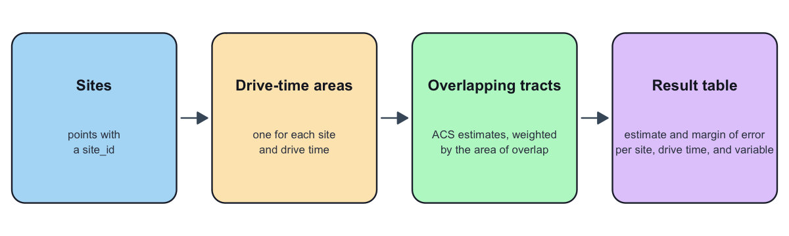

library(catchmentACS)
library(dplyr)
library(sf)
# Force network-free, deterministic builds: no provider/Census calls, no cache.
old_options <- options(
catchmentACS.progress = "off",
catchmentACS.rate_first_default = FALSE
)
old_cache <- getOption("catchmentACS.cache_enabled", NULL)
on.exit(options(old_options), add = TRUE)
on.exit(options(catchmentACS.cache_enabled = old_cache), add = TRUE)
cacs_set_cache(FALSE, scope = "session")This is your ten-minute first run. It is written for people new to the package, including Pre-K administrators and policy researchers who do not work in R every day. By the end you will have run one function, read the table it returns, and (optionally) drawn one map.
If you are porting an older v0.1 or v0.2 script, start instead with the checklist in vignette("porting-v01-to-v03", package = "catchmentACS").
About the data in this article
The tables and map here are built entirely from the package’s bundled
inst/extdatafixtures (the syntheticlegacy_2025_*andsample_alabama_subsetobjects), so this article renders with no Census, OSRM, ORS, or other network calls. These fixtures are synthetic and illustrative — included only for examples, tests, and reproducible package checks. They are not live Alabama policy estimates and must not be cited as real ACS results. Any real analysis requires a fresh live run (seevignette("providers", package = "catchmentACS")).
What catchmentACS does
You give it a set of program sites and a few drive times (say 5, 10, and 15 minutes). For each site, catchmentACS draws the area you can reach within each drive time, finds the census tracts that fall inside, and reports the American Community Survey (ACS) conditions there — poverty, SNAP, employment, and more — each with a margin of error. In one sentence: it answers “what are neighborhood conditions within a short drive of this site?”
The whole pipeline runs in a single call, cacs_run():
sites + drive times → drive-time areas → census tracts inside → area-weighted ACS totals and rates (with margins of error) → one tidy table.
The math behind the area weighting and the margins of error lives in vignette("methodology", package = "catchmentACS"); this article stays at the workflow level.

Install
Once the package is on CRAN:
install.packages("catchmentACS")Before then, install from GitHub:
# install.packages("pak")
pak::pak("joonho112/catchmentACS")A live run that pulls fresh ACS data needs a free Census API key (one-time setup, takes a minute at https://api.census.gov/data/key_signup.html):
tidycensus::census_api_key("YOUR_KEY_HERE", install = TRUE)You do not need a key for this article — it uses bundled data — and the default routing provider (OSRM) needs no key either, so you can follow along with nothing installed beyond the package itself.
Your first run (offline)
The example below is the whole package in one call, and it runs fully offline. It loads three bundled fixtures — sites, precomputed drive-time areas, and an ACS extract — and passes the last two through precomputed_isochrones = and acs =. Those two arguments tell cacs_run() to skip the routing and Census downloads and use what you hand it, so this makes no network calls and needs no API key. We use one site, AL_SITE_03, with drive times of 5, 10, and 15 minutes. You can copy and run this as-is.
# Load the three bundled example inputs.
sites <- readRDS(system.file(
"extdata", "legacy_2025_sites.rds", package = "catchmentACS"
))
iso <- readRDS(system.file(
"extdata", "legacy_2025_isochrones.rds", package = "catchmentACS"
))
acs <- readRDS(system.file(
"extdata", "sample_alabama_subset.rds", package = "catchmentACS"
))
site_id <- "AL_SITE_03"
result <- cacs_run(
sites = sites[sites$site_id == site_id, , drop = FALSE],
state = "AL",
year = 2023,
drive_times = c(5, 10, 15),
variables = unname(cacs_acs_default_vars),
provider = "osrm",
precomputed_isochrones = iso[iso$site_id == site_id, , drop = FALSE],
acs = acs,
weight_method = "area",
output = "long",
verbose = FALSE
)
dim(result)[1] 57 27A quick look at the arguments:
-
sites— your program locations (here, one synthetic site). -
state/year— the ACS universe: a two-letter state code and the end year of the 5-year ACS (2009–2024 supported; 2024 is the most recent vintage). -
drive_times— the catchment bands in minutes (here, three nested rings). -
variables— which ACS variables to pull;cacs_acs_default_varsis the built-in default set. -
provider— the routing engine for live runs. Here"osrm"only labels the provenance of the precomputed areas; it makes no request. -
precomputed_isochrones/acs— the offline bypass: supply both and no network is touched. Drop both for a real run. -
weight_method—"area"is the supported method in this release. -
output— the shape of the result ("long","list_column", or"both").
What you would run for real. Once your Census key is set, a live run is the same call without the two bypass arguments — catchmentACS then draws the drive-time areas with OSRM and pulls ACS data for you. That form is shown here but not executed (it would need a network):
# Live form: needs a Census key and network access.
tidycensus::census_api_key("YOUR_KEY_HERE", install = TRUE)
result <- cacs_run(
sites = cacs_alabama_sites, # 10 bundled Alabama sites, or your own
state = "AL",
year = 2023,
drive_times = c(5, 10, 15),
provider = "osrm",
output = "long"
)See ?cacs_run for every argument, and vignette("alabama-tutorial", package = "catchmentACS") for the same offline call worked into a reporting-ready table.
Reading your results
result is one tidy long table: one row per site, drive-time band, and variable. It carries extra bookkeeping columns that record how, when, and from what data each number was made — useful when you share results, ignorable otherwise. Day to day you read only a handful:
result |>
filter(variable %in% names(cacs_acs_default_rates)) |>
select(site_id, drive_time_min, variable, estimate, moe, failure_origin) |>
head(10)# A tibble: 5 × 4
variable mean_estimate sd_estimate n
<chr> <dbl> <dbl> <int>
1 snap_rate 0.441 0 2
2 labor_force_participation 0.323 0 2
3 poverty_rate 0.261 0 2
4 ssi_rate 0.101 0 2
5 unemp_rate 0.0939 0 2# A tibble: 2 × 7
site_id drive_time_min poverty_rate snap_rate ssi_rate unemp_rate
<chr> <int> <dbl> <dbl> <dbl> <dbl>
1 AL_SITE_03 5 0.261 0.441 0.101 0.0939
2 AL_SITE_03 10 0.261 0.441 0.101 0.0939
# ℹ 1 more variable: labor_force_participation <dbl># A tibble: 10 × 6
site_id drive_time_min variable estimate moe failure_origin
<chr> <int> <chr> <dbl> <dbl> <chr>
1 AL_SITE_03 5 poverty_rate 0.261 0.0561 none
2 AL_SITE_03 5 snap_rate 0.441 0.118 none
3 AL_SITE_03 5 ssi_rate 0.101 0.0267 none
4 AL_SITE_03 5 unemp_rate 0.0939 0.0238 none
5 AL_SITE_03 5 labor_force_partici… 0.323 0.0551 none
6 AL_SITE_03 10 poverty_rate 0.261 0.0561 none
7 AL_SITE_03 10 snap_rate 0.441 0.118 none
8 AL_SITE_03 10 ssi_rate 0.101 0.0267 none
9 AL_SITE_03 10 unemp_rate 0.0939 0.0238 none
10 AL_SITE_03 10 labor_force_partici… 0.323 0.0551 none | Column | Plain-English meaning |
|---|---|
site_id |
Which program site this row describes. |
drive_time_min |
Which catchment band, in minutes (5, 10, or 15). |
variable |
Which indicator (e.g. poverty_rate, or a raw ACS code). |
estimate |
The value. For a rate, a proportion: 0.173 means 17.3%. |
moe |
Margin of error (MOE) at the 90% level — see below. |
failure_origin |
"none" means the row is good; otherwise where it went wrong. |
A margin of error (MOE) is the half-width of a 90% confidence interval: you report a value as estimate ± moe, the same way the Census Bureau reports ACS figures. So a poverty_rate of 0.173 with an moe of 0.024 says the catchment’s poverty rate is about 17.3% ± 2.4 points. The package carries the ACS published MOEs through every weighting and rate step; the formulas are in ?cacs_propagate_moe and vignette("methodology", package = "catchmentACS").
Two habits worth forming early:
-
Check
failure_originfirst.failure_origin == "none"is your success flag. If an estimate isNA, this column names the stage that produced the gap (an upstream ACS input, an isochrone failure, an empty intersection, and so on) so you can diagnose rather than guess. -
The five curated rates ride alongside the raw variables. Every
(site, drive_time)cell gets five extra rows —poverty_rate,snap_rate,ssi_rate,unemp_rate, andlabor_force_participation— computed from the raw ACS counts. They share the sameestimate/moecolumns, so you read them exactly like any other variable. These are the headline outputs most users reach for.
Here are the five curated rates for the 15-minute catchment around this site:
result |>
filter(
variable %in% names(cacs_acs_default_rates),
drive_time_min == 15,
failure_origin == "none"
) |>
select(site_id, drive_time_min, variable, estimate, moe)# A tibble: 5 × 4
variable mean_estimate sd_estimate n
<chr> <dbl> <dbl> <int>
1 labor_force_participation 0.536 NA 1
2 poverty_rate 0.255 NA 1
3 snap_rate 0.251 NA 1
4 ssi_rate 0.0852 NA 1
5 unemp_rate 0.0664 NA 1# A tibble: 1 × 7
site_id drive_time_min poverty_rate snap_rate ssi_rate unemp_rate
<chr> <int> <dbl> <dbl> <dbl> <dbl>
1 AL_SITE_03 15 0.255 0.251 0.0852 0.0664
# ℹ 1 more variable: labor_force_participation <dbl># A tibble: 5 × 5
site_id drive_time_min variable estimate moe
<chr> <int> <chr> <dbl> <dbl>
1 AL_SITE_03 15 poverty_rate 0.255 0.0351
2 AL_SITE_03 15 snap_rate 0.251 0.0345
3 AL_SITE_03 15 ssi_rate 0.0852 0.0113
4 AL_SITE_03 15 unemp_rate 0.0664 0.00838
5 AL_SITE_03 15 labor_force_participation 0.536 0.0739 For a friendlier view, summary() reshapes the same numbers into one row per site and drive time, with each rate formatted as estimate ± MOE:
summary(result)$rates_per_site_moe# A tibble: 3 × 7
site_id drive_time_min poverty_rate snap_rate ssi_rate unemp_rate
<chr> <int> <chr> <chr> <chr> <chr>
1 AL_SITE_03 5 0.261 ± 0.056 0.441 ± 0.118 0.101 ± 0.027 0.094 ± 0…
2 AL_SITE_03 10 0.261 ± 0.056 0.441 ± 0.118 0.101 ± 0.027 0.094 ± 0…
3 AL_SITE_03 15 0.255 ± 0.035 0.251 ± 0.034 0.085 ± 0.011 0.066 ± 0…
# ℹ 1 more variable: labor_force_participation <chr>Remember these numbers come from synthetic example data; cite real values only from a live run.
An optional map
If the optional leaflet package is installed, you can see the site and its 15-minute drive-time area on a base map. This chunk is gated on the namespace, so it is simply skipped when leaflet is absent — and we call leaflet:: rather than attaching the package.
one_site_pt <- sites[sites$site_id == site_id, ]
one_site_iso <- iso[iso$site_id == site_id & iso$drive_time_min == 15, ]
leaflet::leaflet(one_site_pt) |>
leaflet::addProviderTiles("CartoDB.Positron") |>
leaflet::addPolygons(
data = one_site_iso, weight = 2, opacity = 0.6,
color = "#c05621", fillOpacity = 0.15
) |>
leaflet::addCircleMarkers(
radius = 5, color = "#2b6cb0",
fillOpacity = 0.8, stroke = FALSE,
popup = ~site_id
)The blue dot is the site; the orange shape is everything within a 15-minute drive. Change the site_id value near the top of “Your first run” to explore a different site.
Where to next
You have your first estimate. From here:
-
A full reporting workflow on real Alabama sites — comparing sites, building export tables:
vignette("alabama-tutorial", package = "catchmentACS"). -
Routing providers and credentials — OSRM (default), ORS (optional, needs a key), and the reserved Mapbox/r5r surfaces:
vignette("providers", package = "catchmentACS"). -
The math behind area weighting and MOE propagation:
vignette("methodology", package = "catchmentACS"). -
Every
cacs_run()argument in detail:?cacs_run.
Bug reports and feature requests: https://github.com/joonho112/catchmentACS/issues.